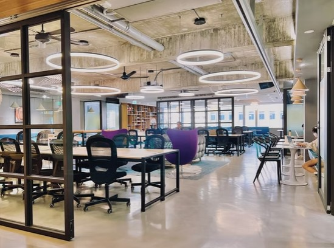

| 時間 | 事項 | 說明 |
|---|---|---|
| 12:00 | 工作人員全員到場 | 開始準備｜請大家先吃完中餐喔 |
| 12:00–12:30 | 排座位 | 全員協助場地佈置 |
| 12:30 | TV team 到場 | 架設攝影器材、確認拍攝角度與場地光線 |
| 12:30 | 達人到場 | |
| 12:50 | 易拉展架設 | 老墨、小愛協助 |
| 12:30–13:00 | 順一次流程 | Mark、EMMA、達人對齊流程細節 |
| 12:45 | 餐點廠商到場 | 小愛、老墨引導進場協助設置 |
| 13:00–13:15 | 最後測試確認 | EMMA：系統、投影、設備最終確認 |
| 13:30 | 餐點設置完成 | 茶點備妥 |
| 13:30–14:00 | 報到與入座 | 享用現場茶點，與學員認識交流 |
| 14:00–14:05 | 主持人開場 | 介紹三位達人背景與選股邏輯，說明活動流程與任務規則 |
| 14:05–14:30 | 院長講座 | 籌碼選飆股 |
| 14:30–14:45 | 院長任務實作 | 自備筆電獨立解題，達人現場協助 |
| 14:45–15:10 | 貓老大講座 | 主力獵飆股 |
| 15:10–15:25 | 貓老大任務實作 | 自備筆電獨立解題，達人現場協助 |
| 15:25–15:35 | 中場休息 | 提供下午茶點，可向達人交流提問 |
| 15:35–16:00 | 園長江加宏講座 | 拆解處置股傳說 |
| 16:00–16:15 | 園長江加宏任務實作 | 自備筆電獨立解題，達人現場海巡除錯 |
| 16:15–16:45 | Q&A 時段 | 全場提問，任務結算 ｜ ★ 17:00 需請學員離場 |
| 16:45–17:00 | 任務獎勵・交流・大合照 | 頒獎、抽獎、合影留念 |
| 17:00–18:00 | 撤場 | 18:00 前完成 |
| 時間 | 任務 |
|---|---|
| 12:00 | 到場 |
| 12:00–12:30 | 協助排座位 |
| 12:30–13:00 | 與 EMMA、達人順一次流程 |
| 13:30–13:50 | 引導學員報到後入座★ 13:50 提前備妥開場 |
| 14:00–14:05 | 主持開場：介紹三位達人背景與選股邏輯，說明任務規則與流程 |
| 14:05–14:30 | 院長講座 |
| 14:30–14:45 | 院長任務實作：提示學員開始作答 |
| 14:45–15:10 | 貓老大講座 |
| 15:10–15:25 | 貓老大任務實作：提示學員開始作答 |
| 15:25–15:35 | 中場休息：提醒即將繼續，掌控時間 |
| 15:35–16:00 | 園長江加宏講座 |
| 16:00–16:15 | 園長江加宏任務實作：提示學員開始作答 |
| 16:15–16:45 | 主持 Q&A 時段：引導全場提問、任務結算 |
| 16:45–17:00 | 任務獎勵・交流・大合照 |
| 17:00–18:00 | 撤場：協助將座位與場地復原 |
| 時間 | 任務 |
|---|---|
| 12:00 | 到場 |
| 12:00–12:30 | 協助排座位 |
| 12:30–13:00 | 與 Mark、達人順一次流程，對齊各環節時間節點；同步備妥報到系統與名單 |
| 13:30–13:50 | 執行報到：與小愛協作核對學員名單與 ID 碼；確認現場狀況就緒 |
| 13:55 | 確認開場準備完成，通知 Mark 開始 |
| 14:05 | 提醒院長講座開始（25 分鐘） |
| 14:28 | 提醒院長剩餘 2 分鐘 |
| 14:30 | 提醒院長講座結束，進入任務實作（15 分鐘） |
| 14:45 | 提醒換場，貓老大準備上場 |
| 15:08 | 提醒貓老大剩餘 2 分鐘 |
| 15:10 | 提醒貓老大講座結束，進入任務實作（15 分鐘） |
| 15:25 | 提醒中場休息開始（10 分鐘） |
| 15:33 | 提醒中場休息剩餘 2 分鐘，請學員回座 |
| 15:35 | 提醒換場，園長江加宏準備上場 |
| 15:58 | 提醒園長江加宏剩餘 2 分鐘 |
| 16:00 | 提醒園長江加宏講座結束，進入任務實作（15 分鐘） |
| 16:15 | 提醒進入 Q&A 環節 |
| 16:43 | 提醒 Mark Q&A 即將結束，準備帶任務獎勵環節 |
| 17:00–18:00 | 撤場：協助將座位與場地復原 |
| 時間 | 任務 |
|---|---|
| 12:00 | 到場 |
| 12:00–12:30 | 協助排座位 |
| 12:30–12:50 | 動線確認、易拉展架設★ 需架設 |
| 12:45–12:55 | 準備報到系統、備妥名單 |
| 13:30–14:00 | 執行報到：核對學員名單 |
| 14:00 後 | 處理遲到學員補登 |
| 活動期間 | 巡場協助學員解決問題（筆電設定、系統操作、任務疑問） |
| 15:25–15:35 | 中場休息 |
| 17:00–18:00 | 撤場：協助將座位與場地復原 |
| 時間 | 任務 |
|---|---|
| 12:00 | 到場 |
| 12:00–12:30 | 協助排座位 |
| 12:30–12:50 | 動線確認、易拉展架設★ 需架設 |
| 12:45–12:55 | 座位區確認，動線最後確認 |
| 13:30–14:00 | 帶位：引導完成報到的學員至座位區就座 |
| 14:00 後 | 巡場協助學員解決問題（與小愛分工），引導遲到學員入座 |
| 活動期間 | 巡場協助學員解決問題（筆電設定、系統操作、任務疑問） |
| 15:25–15:35 | 中場休息 |
| 17:00–18:00 | 撤場：協助將座位與場地復原 |
| 時間 | 任務 |
|---|---|
| 12:30 | 到場，架設攝影器材、確認拍攝角度與場地光線 |
| 13:30–14:00 | 側拍學員報到、入座、茶點交流畫面 |
| 14:00–14:05 | 拍攝主持人開場 |
| 14:05–14:30 | 拍攝院長講座（講台、簡報、學員反應） |
| 14:30–14:45 | 側拍實作畫面、達人海巡互動 |
| 14:45–15:10 | 拍攝貓老大講座 |
| 15:10–15:25 | 側拍實作畫面、達人海巡互動 |
| 15:25–15:35 | 拍攝中場休息交流畫面 |
| 15:35–16:00 | 拍攝園長江加宏講座 |
| 16:00–16:15 | 側拍實作畫面、達人海巡互動 |
| 16:15–16:45 | 拍攝 Q&A 時段 |
| 16:45–17:00 | 拍攝任務獎勵・大合照 |
| 17:00 | 確認所有影像素材完整備份後撤場 |

| 工作人員 | 1234 |
| 講師 | 無密碼 |
| 助教 | admin |
| 測試學員甲 | 9001 |
| 測試學員乙 | 9002 |
| 測試學員丙 | 9003 |
| 完成任務數 | 點數 | 備註 |
|---|---|---|
| 完成 1 個 | 100 點 | 布條標示一致 |
| 完成 3 個 | 100 點 + 抽獎資格 | 完成全部任務，有機會抽中加碼獎品 |